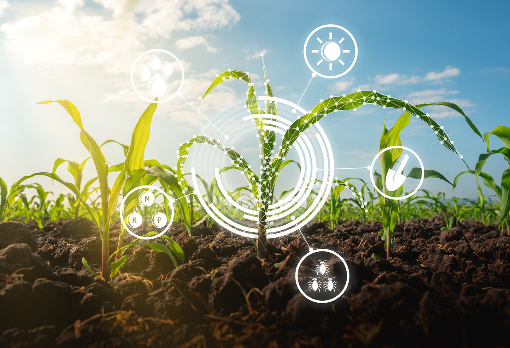

O futuro da tecnologia no campo

- O que é o agro 5.0?
- Quais as principais transformações que o agro 5.0 vai trazer para o campo?
- Principais desafios do agro 5.0
- Agro 5.0 é uma evolução da agricultura que utiliza tecnologias avançadas, como inteligência artificial, internet das coisas, robótica, drones, entre outras, para otimizar a produção agrícola, aumentar a eficiência e reduzir o impacto ambiental. Essa abordagem visa a integração de dados em tempo real para tomada de decisões mais precisas e rápidas, bem como a automatização de tarefas, possibilitando uma produção mais sustentável e econômica.
Empresas de tecnologia focadas no agronegócio são chamadas de agtechs!
- O Agro 5.0 trará diversas transformações para o campo, entre as principais estão:
- - Maior precisão e eficiência na produção, graças à integração de dados em tempo real e a automação de processos.
- - Aumento da produtividade e da qualidade dos produtos agrícolas, graças à utilização de tecnologias avançadas como drones, inteligência artificial, sensores, entre outras.
- - Melhoria da gestão ambiental e redução do impacto ambiental da produção, através de práticas mais sustentáveis e tecnologias que permitem o monitoramento e controle mais precisos.
- - Melhoria na gestão da cadeia de suprimentos, permitindo uma melhor rastreabilidade dos produtos agrícolas, aumentando a transparência e a confiança dos consumidores.
- - Redução dos custos de produção e maior rentabilidade para os produtores rurais, graças à otimização de processos e à redução do desperdício.
- - Possibilidade de novos modelos de negócios e de parcerias entre diferentes atores da cadeia agrícola, impulsionados pelo uso de tecnologias avançadas e pela integração de dados.
- O Agro 5.0 traz consigo muitas oportunidades, mas também alguns desafios a serem enfrentados, entre eles:
Investimento em tecnologia: A adoção de tecnologias avançadas pode ser cara, o que pode limitar o acesso a essas soluções para muitos produtores rurais.
Capacitação dos produtores: É necessário capacitar os produtores rurais para que possam usar essas tecnologias de forma eficaz e aproveitar ao máximo seus benefícios.
Conexão à internet e infraestrutura: Para aproveitar ao máximo as tecnologias digitais, é necessário ter uma conexão à internet de alta qualidade e uma infraestrutura adequada, o que pode ser um desafio em áreas rurais remotas.
Regulação e privacidade de dados: A utilização de tecnologias como drones, sensores e internet das coisas requer regulamentações específicas para garantir a privacidade e a segurança dos dados.
Aceitação e adaptação cultural: A introdução de novas tecnologias pode requerer uma mudança cultural significativa por parte dos produtores rurais, que podem resistir a mudanças em sua forma tradicional de fazer negócios.
Sustentabilidade: É importante garantir que a adoção dessas tecnologias avançadas seja sustentável e não cause danos ao meio ambiente, o que pode exigir novas práticas agrícolas e investimentos em tecnologias verdes.
| Nome |
Idade |
Profissão |
| Arthur |
23 |
Engenheiro Agronomo |
| Elisa |
17 |
Tecnologa |